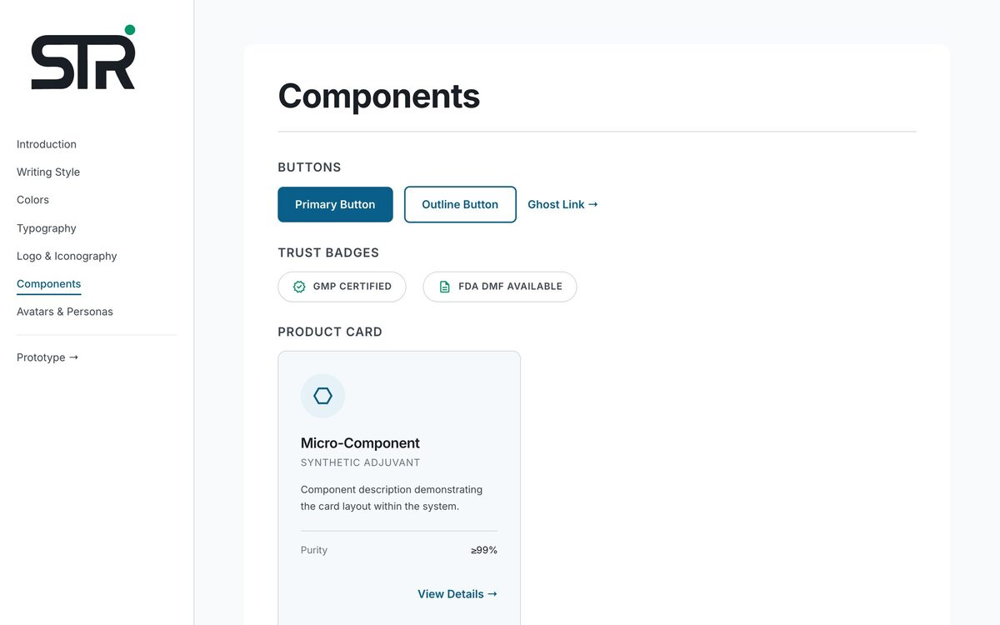

Design systems your teams actually use
I build design systems from who your products serve and what they already have: one set of tokens, a library of components and the rules that go with them, shared by design and code.
design.orange.com, built before anyone called it a design system20+ years in UX and design systems

Every team builds its own version.
Nobody sets out to have twenty-three buttons. It happens one deadline at a time, until a small change takes a week.
- The look follows the team's taste.The look follows researched personas: who uses it decides.
- Every team picks its own shade of the brand colour.One colour token, used everywhere.
- Twenty-three slightly different buttons.One button, three variants, each documented.
- Designers redraw what developers already built.Design files and code use the same names.
- A rebrand means touching every screen.Change the token, and every product follows.
Mess in, system out.
Pick one of three example organisations and watch the work: an inventory of what exists becomes tokens, the tokens become a component, and the component gets its rules.
Example organisations (fictional)
Every component is documented the same way.
Click a part of the documentation to see what your teams get for each component. The example is Corvid's button.
Why trust me with it.
Design systems are where most of my career has been spent.
- I was building design.orange.com before anyone called it a design system
Much of my 20+ years in enterprise UX and design systems was spent building them inside Orange, one of Europe's largest telecoms groups.
From oganiko.com - Knowing when a system needs a new home
When Orange's design system outgrew its WordPress platform, I led its move to a dedicated documentation tool, before it became a problem.
From the WordPress story on oganiko.com - A design system starts with who it's for
For STR Technologies and mAbV, background research showed the audience is primarily scientists. The personas went into each design system and set its rules: a clean, clinical white throughout, and no dark mode, which has no place in the world of biochemistry.
STR design system · mAbV design system - My own system runs every site I build
The OGANIKO Design System: tokens in one source file generate the code, every component carries a maturity status, and a check fails when the output drifts from the source.
From oganiko.com
From mess to system.
How I build a design system: start from who it's for and what your products already have, agree the foundations with your teams, then document it and roll it out one product at a time.
- 1Who it's for
Research the people your products serve and write them into the system as personas. Then count what already exists.
- ↺ Review with your teams until it's right
- 2Tokens
The foundations as named values: colour, type, space, shape, chosen for those people.
- 3Components
The most-used parts first, built from the tokens.
- 4Guidelines and site
The rules next to each component, on a site everyone can search.
- 5Adopted
One product moves first, the rest follow, and a check catches drift.
- A PDF of rules
- Teams copy what they can
- Drift by the next release
A style guide describes; a design system is used, in design files and in code.
What you'd get.
A system your teams build with, not a document they file away.
- A token setColour, type, space and shape, generating code for every product.
- A component libraryThe parts you use most, with every state and rule.
- A documentation siteLive, searchable, and kept next to the code.
- AdoptionThe first product moved over, and a drift check for the rest.
Questions.
We already have a style guide. Isn't that enough?
A style guide describes how things should look. A design system is what teams actually build with: the same tokens and components in design files and in code.
Do we have to rebuild our products?
No. I start with the tokens and the most-used components, then move one product over at a time.
Can one system cover several brands?
Yes. The components stay the same and each brand gets its own theme of tokens.
Can you work with our teams in their language?
Yes. I work in English, German, French and Polish.
One system,every product.
Phil Parry20+ years in UX, brand and design systems
phil.parry@oganiko.com · oganiko.com